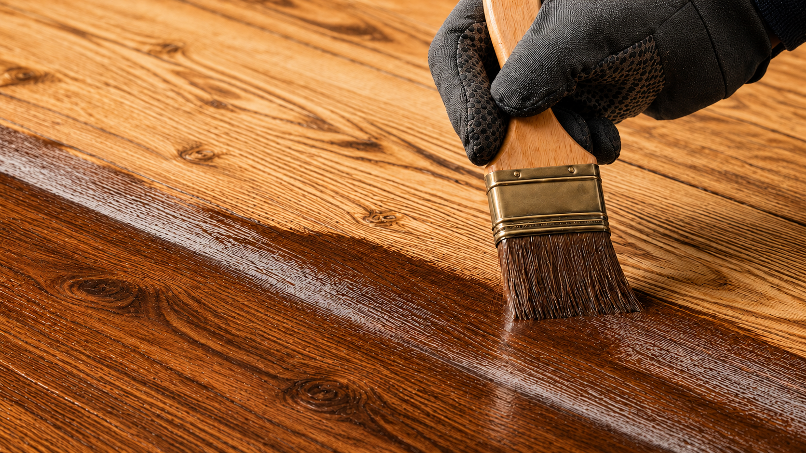

Какая огнебиозащита для дерева лучше: как выбрать состав
Понятно объясняем, чем обработать стропила, балки и уличные конструкции, как выбрать группу защиты и не ошибиться с расходом.
Понятно объясняем, чем обработать стропила, балки и уличные конструкции, как выбрать группу защиты и не ошибиться с расходом.

Хорошая огнебиозащита — не обязательно самая дорогая. Главное, чтобы она подходила конкретной конструкции, давала нужную группу защиты и была нанесена в расходе, указанном производителем.
Для сухих стропил и балок на чердаке чаще выбирают водную пропитку. Для террасы, навеса или другой уличной древесины нужен состав, которому прямо разрешена работа при влаге и перепадах температуры. Разберёмся, на что смотреть до покупки.
| Где находится древесина | Что обычно подходит | Что проверить |
|---|---|---|
| Стропила и балки сухого чердака | Водная огнебиозащитная пропитка | Группу защиты, расход и возможность применять в неотапливаемом помещении |
| Обрешётка и перекрытия | Пропитка с индикаторным оттенком | Цвет помогает видеть пропуски, но не подтверждает качество |
| Видимые стены и балки | Прозрачный огнезащитный лак или совместимая система | Изменение оттенка, блеск и совместимость с финишем |
| Навес, терраса, фасад | Атмосферостойкий состав или комбинированная система | Прямое разрешение на наружное применение и стойкость к влаге |
| Уже окрашенное дерево | Совместимая система или очистка | Обычная пропитка не пройдёт через лак или краску |
| Ответственный объект | Состав по проекту | Группу, документы, технологию и контроль результата |
Эта таблица — хороший старт. Но прежде чем выбрать банку, стоит понять, что именно делает огнебиозащита.
Это состав, который одновременно помогает защитить древесину от огня и биопоражений. В нём есть антипирены — они снижают горючесть, — и антисептики, которые сдерживают грибок, плесень, синеву и насекомых.
Важно: обработка не делает дерево негорючим. Она затрудняет воспламенение и замедляет распространение пламени. Она также не лечит уже сгнившую конструкцию — сначала нужно устранить влагу и заменить разрушенные участки.
Группа показывает, насколько состав снижает горючесть древесины при испытании. Чем выше требование к объекту, тем внимательнее нужно отнестись к этому показателю.
| Группа | Результат испытаний | Когда выбирают |
|---|---|---|
| I группа | Потеря массы образца не более 9% | Когда нужна повышенная эффективность или это требует проект |
| II группа | Потеря массы более 9%, но не более 25% | Когда этого достаточно по проекту и условиям объекта |
| Защита не подтверждена | Потеря массы более 25% | Состав нельзя считать огнезащитным |
Не обязательно. Если для конструкции достаточно II группы, переплачивать за I нет смысла. И наоборот: II группу нельзя ставить вместо I, если проект требует более высокую защиту. Сначала смотрят требования, потом выбирают состав.
Самый частый выбор для стропил, балок и обрешётки в сухих или закрытых помещениях. Они удобны в работе, но чувствительны к влаге и обычно не подходят для открытой улицы без отдельного подтверждения.
Солевые пропитки доступны по цене, но могут вымываться и иногда влияют на металл рядом с древесиной. Несолевые составы часто лучше переносят эксплуатацию, но их тоже выбирают только по документации, а не по названию на канистре.
Их используют на видимой древесине, когда важно сохранить аккуратный вид. Они образуют защитный слой на поверхности и должны быть совместимы с грунтом и финишным покрытием.
Промышленный способ, при котором состав вводят глубже в древесину. Он применяется не на каждом объекте, но может быть нужен для отдельных изделий или конструкций с особыми требованиями.
Стропила находятся в скрытой, но очень важной части дома. Здесь особенно важно не просто «покрасить дерево», а получить нужный расход и равномерно обработать все поверхности.
Узнайте, какая группа нужна проекту или вашему объекту. Если требований нет, не стоит выбирать наугад: условия чердака, назначение здания и конструкция могут сильно влиять на решение.
На результат влияет количество состава на квадратный метр. Два прохода кистью могут дать разный результат в зависимости от впитываемости дерева. Посчитайте площадь и общий объём материала заранее.
Сухой чердак, влажное помещение и улица — это три разные задачи. В инструкции должно быть прямо указано, где допускается использовать состав.
Пыль, кора, старый лак, плотная краска и влажная древесина мешают пропитке впитаться. Если есть плесень или гниль, сначала устраняют причину увлажнения и оценивают состояние дерева.
Не наносите новый состав поверх старого без подтверждения совместимости. Это относится и к грунтам, лакам, краскам и влагозащитным покрытиям.
Заявленные «до 20 лет» всегда зависят от условий. На сухом чердаке и под дождём один состав прослужит по-разному. Срок обновления берут из документации и результатов осмотра.
Для улицы подходит только система, в документах которой прямо указано наружное применение. Интерьерную пропитку нельзя сделать атмосферостойкой, просто покрыв её обычным лаком: финиш может изменить огнезащитные свойства.
Для наружной древесины проверяют стойкость к осадкам и перепадам температуры, возможность прямого контакта с влагой, совместимость слоёв, срок службы и способ восстановления повреждений. Иногда правильным выбором становится не универсальная пропитка, а система из нескольких совместимых материалов.
Даже хороший состав не даст заявленный результат, если нанести его на влажное или грязное дерево. Работы обычно идут в такой последовательности:
Температуру, влажность воздуха и время сушки берут из инструкции конкретного производителя. Универсального режима для всех составов нет.
| Ошибка | Почему это плохо | Что сделать |
|---|---|---|
| Выбирать только по цене | Дешёвый состав может иметь большой расход | Сравнивать стоимость обработки 1 м² для нужной группы |
| Нанести один тонкий слой | Не достигается нужный расход | Контролировать общий объём материала |
| Обработать влажное дерево | Состав хуже впитывается и сохнет | Устранить протечки и высушить древесину |
| Нанести поверх краски | Пропитка остаётся сверху | Очистить поверхность или подобрать совместимую систему |
| Использовать интерьерный состав на улице | Компоненты могут вымываться | Проверить разрешённые условия эксплуатации |
| Оценивать качество по цвету | Краситель не подтверждает группу защиты | Контролировать расход и технологию |
| Смешивать разные марки | Материалы могут быть несовместимы | Использовать одну подтверждённую систему |
Осмотр помогает заметить пропуски, повреждения и неравномерный слой. Но по одному внешнему виду нельзя понять, достигнута ли нужная огнезащитная эффективность.
Проверяют соблюдение технологии, документы на материал и расход. При профессиональном контроле могут отбирать образцы поверхностного слоя древесины. В процессе эксплуатации периодичность задаёт документация производителя или исполнителя; если она не указана, проверку проводят не реже одного раза в год с оформлением акта или протокола.
Для сухих стропил и балок обычно подходит сертифицированная водная пропитка с нужной группой и расходом. Для улицы нужен атмосферостойкий состав или проверенная многослойная система. Одного продукта для чердака, фасада и декоративной стены не бывает.
Комплексным огнебиозащитным составом с антипиренами и антисептиками. Но если дерево уже гниёт, сначала устраняют влагу и оценивают прочность конструкции.
Обычную пропитку — как правило, нет: плёнка не даст ей проникнуть в древесину. Старое покрытие удаляют или используют только подтверждённо совместимую систему.
Зависит от состава и способа нанесения. Главное — не число проходов кистью, а расход материала на квадратный метр.
Нет. Она снижает горючесть и затрудняет воспламенение, но не заменяет исправную электрику и другие меры пожарной безопасности.
Для сухих стропил и балок чаще всего выбирают водную огнебиозащитную пропитку для закрытых неотапливаемых помещений. Для видимой древесины подойдёт прозрачный лак или совместимая система, для улицы — атмосферостойкий состав.
Перед покупкой проверьте пять вещей: группу эффективности, расход, условия эксплуатации, совместимость с другими покрытиями и порядок контроля. Даже лучший состав не сработает как нужно, если нанести его на влажное или окрашенное дерево либо использовать в меньшем объёме.
Нужна обработка деревянных конструкций с подбором состава и документами? Подробнее — на странице услуги огнезащита деревянных конструкций.